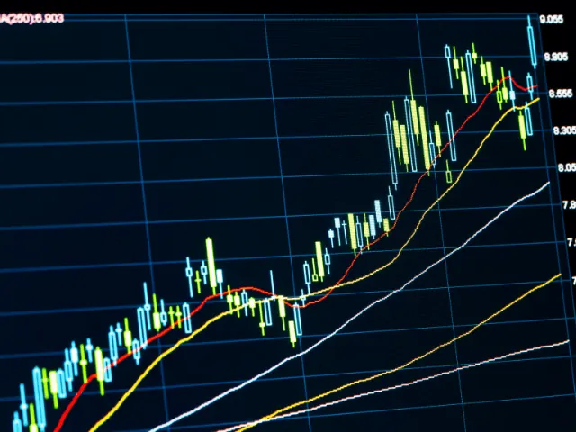
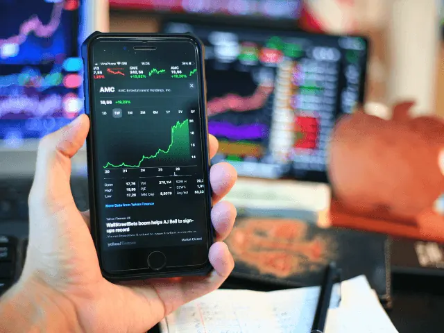
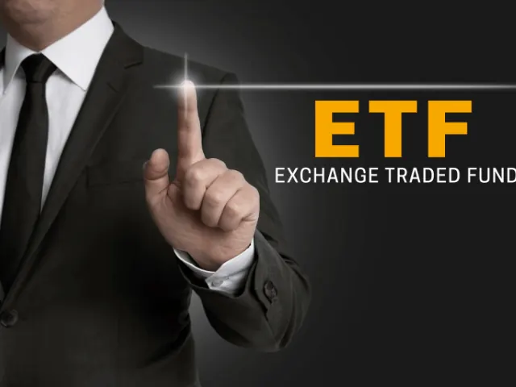
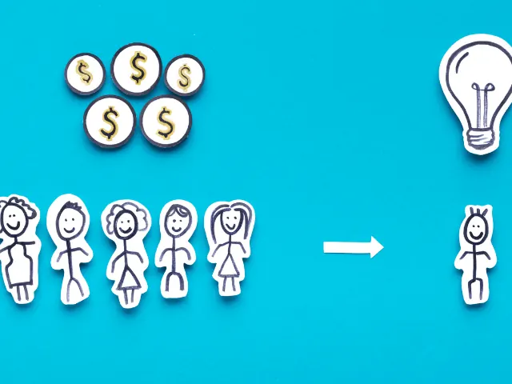
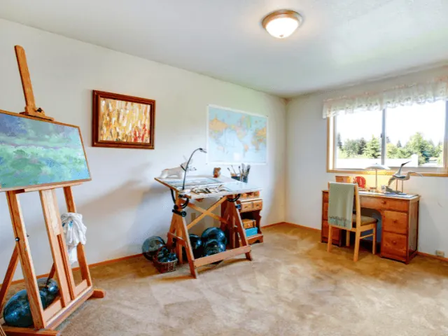
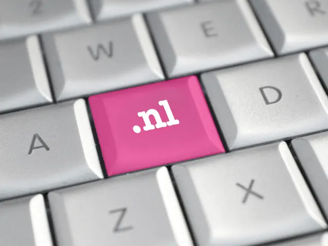

Partnerbijdrage
Waarin moet je investeren in 2023?
Gepubliceerd op 30 november 2022, bijgewerkt op 15 augustus 2023

Nu we langzaam richting het einde van het jaar gaan en we zien dat alles van woning huren en kopen, de energierekening, de boodschappen, de auto, verzekeringen en zelfs boetes en het voer voor de huisdieren enkel en alleen maar duurder worden is het toch echt tijd voor verandering. We kunnen nu richting het einde van het jaar al een stuk vooruit kijken naar volgend jaar en het ziet er niet rooskleurig uit.
Om de inflatie tegen te gaan zullen we moeten investeren in iets wat meer opbrengt in plaats van iets wat steeds minder waard wordt. De rente op de bank is vrijwel nihil al zijn ze gelukkig iets aan het stijgen. Maar met een inflatie van 10 tot 15% ben je er dan nog niet. Je kunt beter je geld in andere dingen stoppen. Bijvoorbeeld -om een zijspoor te noemen – in Pokémon kaarten, die trouwens gigantische winsten hebben opgeleverd. We hebben uitgezocht en een aantal manieren gevonden om de inflatie (zoveel) mogelijk tegen te gaan om daarmee je vermogen te vergroten. Lees je mee!
Corona en inflatie
Zelfs vóór de verrassende pandemie van het coronavirus, die leidde tot een sterke herschikking op de financiële markten, begon de inflatie al hoger te worden. Dit was te wijten aan de lage rentetarieven en de ongebreidelde consumptie gevoed door het goedkope geld. Toen het mysterieuze virus huis hield in het land en de ECB Europese Centrale Bank te laat was met de renteverhoging, begon de inflatie de hoogste stand in 30 jaar te bereiken.
Inflatie stimuleert investeringen
De oplopende inflatie maakt beleggen steeds moeilijker. Om iets te kunnen verdienen moeten we een jaarlijks rendement behalen dat hoger is dan minimaal 10 tot 15%. Ga er maar aan staan.
Met een dergelijk inflatieresultaat zullen deposito’s en spaarrekeningen niet in staat zijn zich te verzetten tegen het waardeverlies van geld. Momenteel kan een belegging in een deposito vanwege de nog steeds niet al te hoge rentetarieven maximaal 1,5-3% rente opleveren.
Het is dus onmogelijk om met deze methode aan de inflatie te ontsnappen, om nog maar te zwijgen van het extra rendement wat je eigenlijk wilt hebben. Om een ROI (Return on Investment, dus je investeringsrendement) van tien procent te behalen, moet je je wenden tot andere investeringen. Sommigen van hen zijn vrij riskante oplossingen. Waarin moet je dan investeren? Laten we eens kijken naar de individuele mogelijkheden.

Aandelen en beleggen op de aandelenmarkt
De aandelenmarkt bestaat niet alleen uit memes waarin makelaars verdrinken in de maalstroom van investeringen, en grappige uitspraken van Warren Buffet. Het is ook een manier om een solide geldinjectie te krijgen, zelfs na aftrek van de vermogenswinstbelasting van de inkomsten.
Om het beursavontuur te beginnen heb je een rekening en een groot deel van de kennis nodig. Investeren alleen op basis van geluk kan de mogelijkheden snel uitputten en het zal grote financiële verliezen opleveren. Daarom is het zo belangrijk om regelmatig te trainen, gidsen te gebruiken, jezelf inlezen om de materie en begrippen te begrijpen en deskundige meningen te volgen. Een website zoals IEX.NL gaat je daarbij zeker helpen. Een beleggersrekening kan je openen banken zoals deGiro.nl, BrandNewDay.nl of bij een traditionele bank zoals ABN-Amro, ING of de Rabobank.
In tijden van crisis is lange termijn beleggen vaak geen goede oplossing, omdat belangrijke bedrijven dividenden intrekken vanwege financiële problemen. Gelukkig stabiliseerde de situatie in 2021 en 2022 en gingen grote bedrijven de winst weer wel regelmatig delen met aandeelhouders. In 2023 zouden ook dividenden weer normaal moeten worden uitgekeerd.
De koopmomenten zijn belangrijk, ga niet op een bodem zitten wachten die toch niet komt. Koop verspreid over een periode een aantal aandelen als jij denkt dat het een gunstige tijd is om in te stappen. In tijden van onrust op de financiële markten is er slechts een korte tijd onzekerheid, dus wie op zoek is naar het laagste niveau van de aandelenmarkt, kan er zelf weleens in vallen.
Voor mensen die niet willen beslissen over één specifiek aandeel, zijn mandjes een oplossing, trackers en ETF’s, of beleggingsfondsen waarvan de waarde dicht bij de gehele aandelenindex ligt een goede oplossing.

Investeren in de aandelenmarkt – op zoek naar dividend
Laten we even terugkomen op de kwestie van de dividenduitkering, die voor ons een vorm van rustig en aantrekkelijk beleggen kan zijn. Wanneer we jarenlang aandelen kopen met dividend in het achterhoofd, is de huidige prijs van een bepaald aandeel voor ons van ondergeschikt belang. Het belangrijkste is dat het bedrijf jaarlijks zijn winst deelt met zijn aandeelhouders. Als we op deze manier willen investeren, moeten we dus op zoek naar beursgenoteerde bedrijven die al jarenlang dividend uitkeren.
Op de Amerikaanse markt is er een term als “dividendaristocraten”. Dit zijn bedrijven die regelmatig hun winst delen, waarvan de prijs op lange termijn stijgt. Zo’n bedrijf is bijvoorbeeld Coca-Cola.
Op de Nederlandse beurs zijn er vergelijkbare bedrijven te vinden, denk hierbij aan Shell die periodiek dividend uitkeert aan de aandeelhouders.
Beleggingsfondsen
Als we echter geen tijd hebben om de aandelen van individuele bedrijven zelf te kiezen of als we gewoon niet van plan zijn een expert te worden op het gebied van kapitaalmarkten, dan kunnen we gebruik maken van de diensten van beleggingsfondsen, die onze marktbemiddelaar zullen zijn.
Onze taak zal alleen zijn om de fondsen te betalen die zullen worden gebruikt om participaties te kopen en om een van onderliggende markten te selecteren. Hun namen zijn meestal vrij eenvoudig en gemakkelijk te begrijpen. Zoals “internationaal fonds” of “durfkapitaalfonds”. Deze fondsen kunnen beleggen in aandelen op nationaal gebied of juist in internationale bedrijven, obligaties of contracten voor grondstoffen.
Het is echter de moeite waard eraan te denken dat zo’n selectie bij het maken van marktkeuzes geld kost. Beleggingsfondsen rekenen namelijk een commissie van ongeveer 2-5% en ze kunnen ook andere kosten in rekening brengen, zoals opnamekosten of overstapkosten, bijvoorbeeld van het ene fonds naar het andere.
Een ander probleem is de mate van risico. De beste specialisten op de markt werken in beleggingsfondsen, maar dat betekent niet dat ze ook altijd de juiste beslissingen zullen nemen. Om deze reden kan het zijn dat een beleggingsfonds in een bepaalde markt in sommige jaren helemaal geen positief rendement behalen. Een manier om het risico te verminderen is passief beleggen via ETF’s .
Voorbeelden van beleggingsfondsen zijn Robeco, Evi van Lanschot en Vanguard. Daarnaast kan elke bank zoals ING, ABN-Amro en de Rabobank ook inschakelen om als fondsbeheerder op te treden.
Passief beleggen via ETF’s
Beleggingsfondsen die zelf specifieke activa selecteren worden actief beheerde fondsen genoemd. Statistieken tonen echter aan dat ze niet altijd erg effectief zijn en slechts 10% van hen behaalt een hoger resultaat dan de hele markt, zoals vertegenwoordigd door individuele indices.
Om deze reden stopten sommige fondsen met racen tegen de markt, maar besloten om alle aandelen van een bepaalde index in de juiste verhoudingen te kopen. Hierdoor kan de waardering van de gehele markt worden weerspiegeld en meegroeien. Zo’n passief fonds is met andere woorden ETF ( exchange-traded fund ). We kunnen zelf ETF’s kopen via onze effectenrekening of gebruik maken van intermediaire bedrijven. Bekende ETF’s zijn SPDR S&P Dividend ETF (SDY), Vanguard High Dividend Yield ETF (VYM) of iShares Euro Dividend UCITS ETF (IDVY). In een ETF zitten vele bedrijven uit verschillende landen en industrien. Doordat je een stukje aandeel koopt van heel vele bedrijven zal de dagelijkse schommelingen een stuk minder hard gaan. Het ene bedrijf zal beter presteren dan het andere en daardoor zal je zien dat de lijn langzaam omhoog of omlaag zal gaan. Een ETF kopen geeft je relatief veel rust terwijl je wel belegt op de aandelenmarkt. Daarnaast hoef je geen fondsbeheerder te betalen en hierdoor houdt je onderaan de streep meer over. Kortom het zal je in veel gevallen een hogere rendement geven dan wanneer je bij een fondsbeheerder je geld inlegt.
Staats- en bedrijfsobligaties
Als de aandelenmarkt ons echter niet interesseert of te riskant voor ons is, kunnen we ons wenden tot goede obligaties. Dit zijn schuldbewijzen, kortom, leningen verstrekt aan particuliere bedrijven of aan de staatskas. Dergelijke leningen worden verstrekt door de uitgegeven obligaties af te lossen en in ruil daarvoor de relevante rente te ontvangen.
Hoewel obligaties worden berekend als een financieel instrument met een laag risico, kunnen ze worden verhoogd (samen met de potentiële winst) door te kiezen voor bedrijfsobligaties, d.w.z. schuldbewijzen uitgegeven door bedrijven. Hiermee kun je uiteraard meer verdienen, maar het risico op insolventie van bedrijven is ook groter dan het faillissement van de staatskas.
Obligaties worden gekocht op de effectenrekening. Het grootste nadeel van obligaties is het lage rendement op de investering. Fondsen worden voor vele jaren bevroren en in ruil daarvoor ontvang je slechts een kleine rente. Door in aandelen te handelen kun je veel meer winnen, hoewel dit dan weer een hoger risico met zich meebrengt.

Investeren in de Forex markt
Als het geen aandelen of obligaties zijn, dan misschien valuta’s? Je kunt er op een echte manier in investeren – dat wil zeggen, door een vreemde valuta te kopen om deze in de loop van de tijd met winst te verkopen.
Je kunt valuta’s ook niet verhandelen via echte beurs, maar via virtuele speculatieve transacties. Hiervoor worden CFD’s op de Forex-markt gebruikt, wat goed voorbereide investeerders en technisch analisten beloont die daar in willen duiken. Dit komt vooral door het gebruik van leverage, waardoor je veel kunt verdienen zonder zelf een grote eigen betaling te hoeven doen. Het kan echter ook leiden tot ernstige verliezen, wat dan ook meer dan eens is gebeurd.
Je kunt met Forex spelen door zogenaamde brokerage accounts te gebruiken die je deze mogelijkheid bieden, dus op die manier kun je proberen om met een niet actief account iets ervan te begrijpen, kijken hoe het werkt en ook actief te handelen, zonder dat je er iets mee wint of verliest.
Blijkt dan dat het iets voor jou is dan kun je een actief account openen en gaan investeren. Niet-bancaire handelsplatforms bieden de beste omgeving voor forextraders, dankzij lage spreads, lage kosten en zeer functionele mobiele applicaties.
De beursgenoteerde activa met het laagste risico zijn de obligaties, die – zoals we al zeiden – een vorm van geldlening zijn aan de staat of een particuliere onderneming. Voor deze lening (bijvoorbeeld voor een jaar – het zijn dan jaarlijkse obligaties) krijgen we het juiste rendement. Aandelen zijn een meer risicovolle vorm van beleggen, maar kunnen wel een hoger rendement op geïnvesteerd vermogen opleveren. Het echte risicogebied begint echter met de zogenaamde futures (termijnmarkt) (we wedden of een bepaald actief in een bepaalde periode goedkoper of duurder zal worden) en CFD’s, die bijvoorbeeld op de Forex markt worden gebruikt.
Investering in grondstoffen
Een ander idee voor investeringen is investeren in grondstoffen, wat een zeer klassieke methode is om je geld te stallen in tijden van een crisis. Goud en Zilver hebben vaak geen last wanneer de wereld in de spreekwoordelijke vuur en vlam staat.
Bijvoorbeeld goud
Als we in april 2019 een ounce goud hadden gekocht, had het een jaar later al 60% meer opgeleverd. We hebben het hier dus over een jaarlijks rendement van ongeveer 40%, wat een uitstekend resultaat is dat alleen op de beurs of op de Forexmarkt te behalen is. Natuurlijk zal goud niet altijd zulke spectaculaire rally’s laten zien, maar het is toch de moeite waard om deze grondstof in jouw beleggingsportefeuille te hebben.
Investeren in goud kan op meerdere manieren
–Fysiek goud
In dit geval koop je goud en krijg je dus echte staven of munten die je thuis bewaart. Wanneer je goud koopt van een professionele handelaar, ontvang je de juiste certificaten en bevestigingen dat hij het van ons zal kopen wanneer we ons goud willen verkopen. Fysiek goud kan ook worden gekocht met de mogelijkheid om het in kluizen (of zelfs ondergronds) op te slaan, maar we kunnen er niet zeker van zijn dat we het in geval van commotie als gevolg van de crisis zullen kunnen ophalen. Wat gebeurt er bijvoorbeeld in geval van een calamiteit, brand, overval, inbraak of een faillissement? Of wat als de eigenaar opeens naar het buitenland gaat, met al het goud, inclusief dat van jou?
Goud op papier
Dit zijn afgeleide financiële instrumenten op basis van de goudhandel. Deze oplossing is in sommige opzichten wel veiliger, omdat we geen waardevolle spullen thuis hoeven te bewaren. Er moet echter aan worden herinnerd dat “papieren goud” niet de werkelijke hoeveelheid fysiek goud weerspiegelt die in de wereld beschikbaar is. Daarom kan er, samen met de versnellende handel in contracten, een grote prijsspeculatie plaatsvinden.
De handelsmarkt biedt ook contracten voor andere grondstoffen – koper, ijzer, uranium, olie of zelfs cacao, tarwe, katoen en suiker.
De namen van de beroemdste producenten van goudstaven ter wereld heeft waarschijnlijk niemand ooit van gehoord, zoals Mint Perth en Valcambi, of Umicore? Als je een solide kapitaal hebt, is het beter om staven met een groter gewicht te kiezen, dan zijn de kosten van één gram lager. Er wachten baren goud op je voor ongeveer de prijs van een appartement in een grote stad, of misschien een kilo zilver, die een stuk minder zal kosten dan goud.
Investeren in cryptomunten
Cryptomunten, zoals Bitcoin, maar ook bijvoorbeeld Ethereum, zijn de afgelopen jaren een hot investment asset geworden.
Het onderwerp, dat slechts in een kleine groep specialisten geïnteresseerd was, werd na vele jaren zelfs onder zondagsinvesteerders een gewild object. Houd er echter rekening mee dat cryptomunten (vooral die met minder populariteit) een zeer volatiel bezit zijn en onderhevig kunnen zijn aan speculatieve aanvallen.
Beleggers leerden dit pijnlijk in 2017 Bitcoin knalde omhoog naar 20 keer zijn oorspronkelijke waarde van ongeveer € 800 euro naar € 19000 euro, maar klapte toen weer in elkaar naar een vierde van die laatste waarde, dus naar € 4500 euro. Daarna ging de achtbaan weer omhoog naar € 28000 euro, en tot nu weer naar beneden, richting de € 16000 euro. In de hoogtij dagen heeft de koers op €50000 gestaan terwijl het nu rond de €14000 schommelt. Dus denk goed na voor je hierin stapt, of kies je voor jezelf een instappunt, dus bijvoorbeeld wacht op een daling tot € 10000 euro voordat je instapt. Of bij € 8000 euro, of bij € 4000 euro. Nou ja, je begrijpt ons punt, want wanneer is de meerjarige daling voorbij, bij 14k, bij 10k, bij 8k of bij 4k? Of is het bij pas bij €2000 euro of bij € 1000 euro genoeg geweest? We zullen het helaas pas achteraf weten…
Zeepbel
Volgens veel economen is dit weer een speculatieve zeepbel. Beginnende beleggers moeten heel voorzichtig zijn met cryptomunten. Het is het beste om geld te investeren in financiële instrumenten die wel worden begrepen, en een grondig begrip van de specifieke kenmerken van elektronische valuta’s op basis van blockchain-technologie is geen eenvoudige taak.
Cryptomunten kunnen worden gekocht op speciale online beurzen en later worden opgeslagen in virtuele of in fysieke portefeuilles. Dergelijke fysieke portefeuilles lijken op een USB-flashstation of een externe schijf. Bitcoin of ethereum kan in sommige grote wereldsteden ook worden gekocht bij geldautomaten of “ATM’s” voor cryptomunten. Later worden ze dan worden geüpload naar een fysieke of virtuele portemonnee.
De laatste manier is CFD’s op cryptomunten, waardoor we ook op dalingen kunnen inspelen en we ons geen zorgen hoeven te maken over het opslaan van onze virtuele valuta .
Investeren in onroerend goed – verhuren of flippen?
In tijden van stijgende huizenprijzen zijn veel experts gespecialiseerd in alleen vastgoedinvesteringen en organiseren ze zelfs webinars of conferenties over dit onderwerp. Het is mogelijk dat de beste tijden voor dit soort beleggen achter ons liggen. Toch kunnen er nog interessante kansen liggen op de vastgoedmarkt. Hoe ga je om met deze vorm van beleggen?
Investering in een appartement of huis in Nijmegen voor verhuur op lange/korte termijn – dit is het meest populaire type investering in onroerend goed, wanneer de verhuurders de afbetalingen van de lening van de eigenaar van het pand terugbetalen. Lange termijn verhuur geeft je gemoedsrust, maar genereert minder inkomsten dan korte termijn verhuur. De pandemie van het coronavirus heeft echter aangetoond hoe snel alle klanten die geïnteresseerd zijn in korte termijn verhuur verloren kunnen gaan. De schatting van de ROI van onroerend goed moet met de nodige voorzichtigheid worden benaderd. Reken in vaste kosten de prijzen van reparaties, stijgende rekeningen of de maanden dat het appartement leeg staat.
Flipping – is de aankoop van een appartement of huis in de gemeente Nijmegen een aantrekkelijk gebied dat moet worden opgefrist. Na renovatie wordt het appartement of huis verkocht voor een tiental procenten meer. Door de renovatieprijs af te trekken en meerdere keren per jaar dezelfde werkwijze te volgen kun je een interessant rendement behalen. Helaas zal je om hier je werk van te maken een groot startkapitaal moeten hebben. Je moet immers eerst een huis kopen en verbouwen voordat het geld gaat opleveren.
Crowdfunding
Crowdfunding is een sociale aankoop, vaak van charitatieve aard. We kunnen echter ook de mogelijkheid van een crowdfunding investering tegenkomen, bijvoorbeeld in een kleine start-up of een bedrijf wat je aan het hart ligt. Meestal is het een aankoop van rechten op aandelen, en een dergelijke stap geeft de eigenaren van een jonge onderneming een sterkere start.
Bij Crowdfunding doe je een investering van een X bedrag en die wordt binnen een aantal jaren met rente terugbetaald. Gangbare rente tarieven zijn tussen de 4 en 10 procent. Crowdfunding platforms zijn geldvoorelkaar.nl, kapitaalopmaat.nl. Een alternatieve vorm van Crowdfunding is een voorverkoopcampagne. Hierbij investeer je in een bedrijf en wanneer dit succesvol is krijg je wanneer het product of dienst klaar is een eerste exemplaar of mag je er als eerste gebruik van maken. CrowdAboutNow.nl is een crowdfundingsplatform waarbij een voorverkoopcampagne mogelijk is.

Alternatieve beleggingen – kunstwerken, antiek, alcohol of auto’s
Of misschien is beleggen in wat meer ongebruikelijke activa het antwoord op het tegengaan van de recessie? Schilderijen, horloges, klokken, oud porselein of… whisky of wijn? Dit soort beleggingssoorten is onderhevig aan heel andere schommelingen dan obligaties of valuta.
Het belangrijkste is tijd, dus meestal geldt dat hoe langer we een alternatief investeringsgoed bewaren, hoe hoger de prijs zal zijn. Modes voor bepaalde historische periodes of een bepaalde artiest zijn ook belangrijk, wat kan resulteren in een verrassende stijging van de prijzen van onze investering.
De rijkste mensen in de wereld hebben niet alleen aandelen, obligaties en fondsen in hun beleggingsportefeuille, maar ook kunstwerken en vintage wijn. In 2014 had maar liefst 15% van de vermogende investeringen van rijke mensen betrekking op alternatieve vormen van kapitaalinvestering.

Investering in je zelf
Sommige mensen denken op een zeer ongebruikelijke manier en zien zichzelf als een investering. Deze manier van denken is juist, want door te investeren in onze gezondheid en vaardigheden kunnen we na vele jaren veel meer verdienen of bijvoorbeeld klaar zijn om een eigen bedrijf te starten.
De beste investeringen zijn opleidingen, boeken of goede apparatuur en machines, waarmee we efficiënter kunnen werken. Geestelijk welzijn is even belangrijk, vooral in moeilijke crisisomstandigheden, wanneer de situatie zeer onstabiel is en voor veel mentaal onvoorbereide mensen kan dit eindigen met een mentale inzinking.
STAP Subsidie
In dit kader wil ik ook even de Stap subsidie van de overheid benoemen. Deze is er 3 of 4 keer per jaar en houdt in dat je in theorie elke opleiding kunt volgen en de overheid betaalt je studie. Of je deze nu nodig hebt als verlengstuk van je werk of je carrière, of dat je iets anders wilt gaan doen, of voor een hobby, of je hebt gewoon een grote interesse daarin, zoals spiritualiteit, psychologie of rechten, het wordt voor je betaald. Dus wat heb je te verliezen?
Ik ken iemand die een vrachtwagen rijbewijs heeft gehaald, een ander heeft een rechtenstudie gevolgd en is daar nog steeds mee bezig (meerjarige opleiding), weer iemand anders heeft E achter B rijbewijs gehaald en er zijn mogelijkheden voor en heftruck opleiding waardoor je gemakkelijk aan een baan komt. Je kunt makelaar worden, teamleider, softwareprogrammeur, hovenier, loodgieter.
Kies een opleiding die jij leuk vindt en ga er voor! Dit geldt zowel voor ondernemers als voor mensen die al een baan hebben. De STAP Subsidie is er weer in januari, vraag voor die tijd even bij de opleider naar alle informatie, zorg dat je al ingeschreven bent om die studie te gaan volgen en wacht begin januari op het startsein om de subsidie aan te vragen, maar let het op; Je moet er snel bij zijn, want vol is vol en dan moet je weer drie maanden wachten op de volgende mogelijkheid.
Investeer in jouw kinderen
Een interessant idee is ook om te investeren in kinderen, omdat de bij hen ontwikkelde gewoonten hun leven lang bijblijven, wat resulteert in een betere aanpassing aan sociaal economische omstandigheden. Het is dan ook de moeite waard om alvast een spaarplan voor jouw kind te openen (de rentetarieven zullen op een gegeven moment zeker stijgen), aandelen te kopen, ze naar extra lessen te sturen of een redelijke omgang met geld aan te gaan leren.
Laat het geld liggen en wacht op de gelegenheid
Of misschien beter niet investeren en gewoon met je geld wachten op de mooie kansen die zich tijdens de recessie voordoen? De crisis veroorzaakt bepaalde situaties waarin sommige mensen hun goederen wegdoen tegen een aanzienlijk lage prijs.
Het hoeft niet alleen een kapotte piano of waardevol servies zijn, maar ook land of onroerend goed. De oude beurshandelaar Warren Buffet zei altijd dat je tijdens de crisis het meeste verdient, maar je moet wel gewoon het geld hebben om van die kansen te profiteren.
Dus denk aan: Boten, jachten, auto’s (al dan niet klassiek of antiek), campers, caravans, huizen, appartementen, fabriekspanden, garages (ideaal voor de verhuur), verzamelingen, antieke klokken en horloges, antieke meubels, kortom; Alles wat een ander niet meer kan houden, niet meer kan betalen of wegdoet omdat ze geen geld meer hebben.
Andere investeringen en beleggingen zijn trouwens koffie, whisky, koper, Pokémon kaarten en Nintendo spelcomputers van vroeger.
Maar wat dacht je van .nl domeinnamen?
Waarde is bepaald door vraag, leeftijd en schaarste, dat zijn de vereisten, laten we ze even volgen.
Schaarste
Domeinnamen zijn schaars, want van die specifieke domeinnaam is er maar 1. Ze zijn schaars, vooral de goede domeinnamen, zoals voetbal.nl en horloge.nl en ze worden ook alleen maar duurder. Bij Voetbal.nl hoef je met minder dan € 150000 euro niet aan te kloppen, evenals horloge.nl. Relatiegeschenk.nl werd verkocht voor € 72000 Meerdere mensen willen dezelfde domeinnaam, voor hun bedrijf, merk, winkel, webshop, etc. Verkoper wil hem niet verkopen, puur omdat de prijs van de domeinnaam door de vraag ernaar in de loop der jaren steeds verder zal oplopen.
Domeinnamen zijn soms oud
Sommige goede domeinnamen zijn oud, als in 18 tot 25 jaar oud. De .nl domeinnaam kwam in 1996 op de markt en sindsdien zijn er al velen voor exorbitante bedragen van de hand gegaan. Vooral de domeinnamen met 1 woord erin, zoals klok.nl, boek.nl, maar nu ook apps.nl zijn gewild.
Domeinnamen zijn uniek
Van elke .nl domeinnaam is er maar 1 en er zal er ook maar 1 van op de markt komen.
Drie letter domeinnamen
Zelfs een simpele drie letter .nl domeinnaam, zoals bijvoorbeeld knv.nl is al ruim 700 tot 1200 euro waard, en dat is enkel maar de retail prijs, dus de ene handelaar die hem aan de andere handelaar verkoopt. Een eindgebruiker, dus een bedrijf of een winkel of een merk die die domeinnaam wil kopen heeft daar dan ook zeker € 3000 tot € 5000 euro voor over. Hoe meer mensen investeren in de domeinnaam markt, hoe hoger de prijzen in het algemeen zullen gaan oplopen. Wellicht iets voor je om je eens meer in te gaan verdiepen?

Zoveel kansen, maar waar begin ik?
Nu je dit artikel hebt gelezen kunnen wij ons voorstellen dat het helemaal begint te duizelen en dat je niet weet waar je moet beginnen. Als eerste is het goed niet iets te doen waar je geen verstand van hebt en er ook niet voor open staat om te leren. Heb je bijvoorbeeld niks met beleggen is ons advies om er dan niet aan te beginnen. Wil je een keer met iemand sparren kan je altijd contact opnemen met een financieel adviseur welke gevestigd is in Nijmegen.